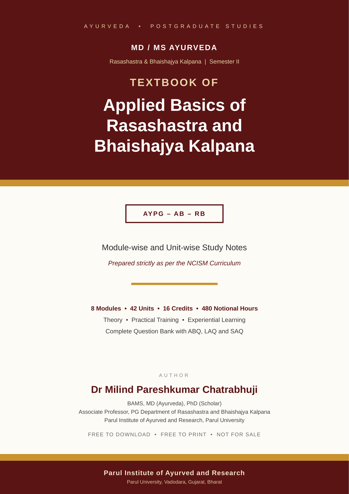
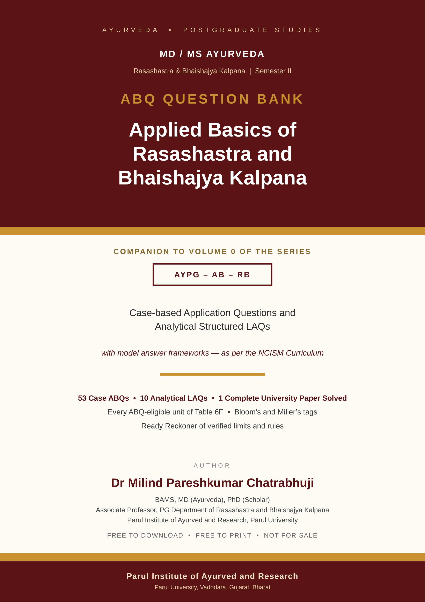
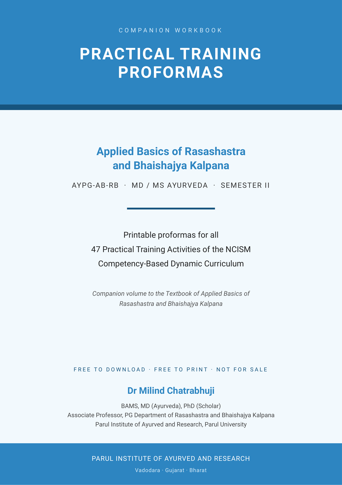

Applied Basics of Rasashastra and Bhaishajya Kalpana
Module-wise & Unit-wise Study Notes · 8 Modules · 42 Units · 16 Credits
Comprehensive textbook, case-based ABQ question bank, and printable practical training proformas prepared strictly as per the NCISM curriculum for MD/MS Ayurveda Semester II.

Module-wise & Unit-wise Study Notes · 8 Modules · 42 Units · 16 Credits

53 Case ABQs · 10 Analytical LAQs · 1 Complete University Paper Solved

Printable Proformas for all 47 Practical Training Activities